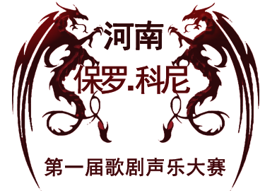
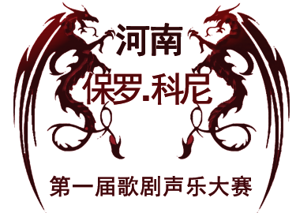
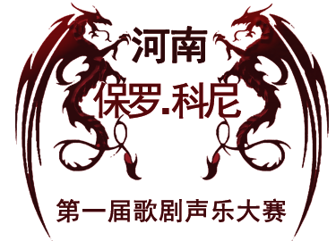
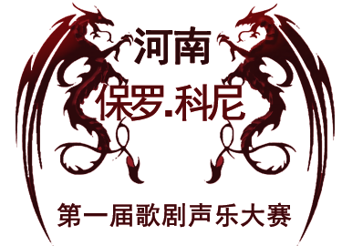

-
Preliminary contest
2015年3月4、5、6日所在报曲目中选一首参加比赛
-
Quarter-final
2015年3月7、8日由评委在所有报曲目中选择一首选手演唱
-
Master class
2015年3月9、10日进入绝赛选手可免费参加大师班
-
The final
2015年3月11日决赛音乐会选手必须演唱2首由评委选出的曲目
 

 


1、此次比赛要求选手年龄在40周岁以下；
2、参赛选手需准备三首歌剧咏叹调，其中两首必须为意大利语；
3、比赛注册费400元人民币，请选手于4月3日初赛选拔时交到大赛秘书处即可；
1、一份填写完毕的报名表，下载地址:河南师范大学音乐舞蹈学院主页http://www.htu.cn/yyxy
2、四张2寸同底报名照；
3、报名截止日期：2015年3月21日，请提前通过电子邮箱寄出报名表，以确保中心在截止日期之前收到；
4、电子邮箱：luciano3325267@163.com；
5、地址:河南师范大学音乐舞蹈学院音乐厅；
6、咨询电话:魏老师18625908512、 张老师 18637376187。 报名电话:0373-3326385；

1、保罗科尼Paolo Coni 大赛艺术总监
2、马克 · 贝雷依Marco · Bellei著名声乐指导钢琴家 指挥家
3、段续 河南师范大学音乐舞蹈学院院长
4、何军 南阳师范学院音乐系主任
1、保罗科尼Paolo Coni 大赛艺术总监
2、马克 · 贝雷依Marco · Bellei著名声乐指导钢琴家 指挥家
3、段续 河南师范大学音乐舞蹈学院院长
4、何军 南阳师范学院音乐系主任
1、保罗科尼Paolo Coni 大赛艺术总监
2、汤沐海国际著名指挥家中国赛区评委会主席
3、贝雷依Marco · Bellei著名声乐指导钢琴家 指挥家